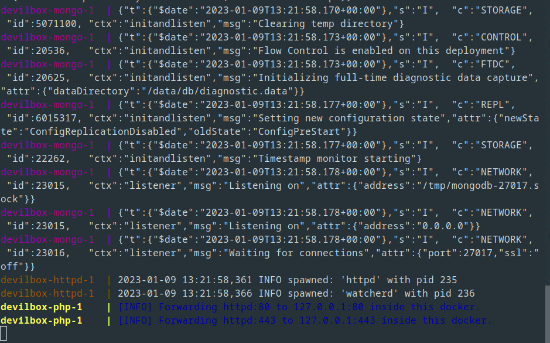
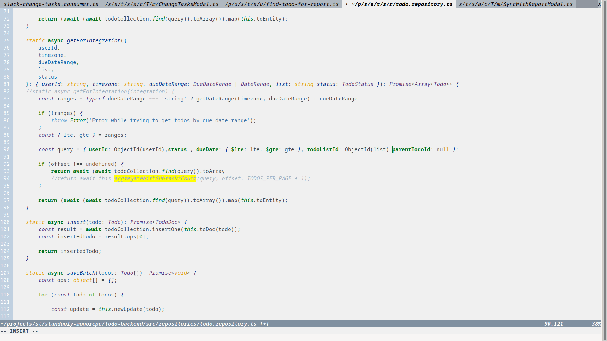
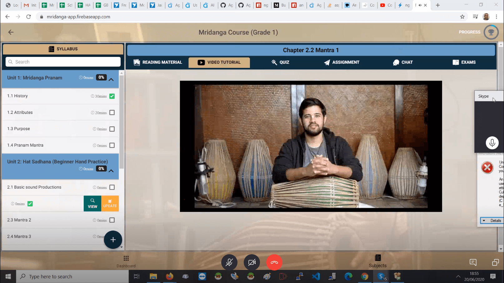
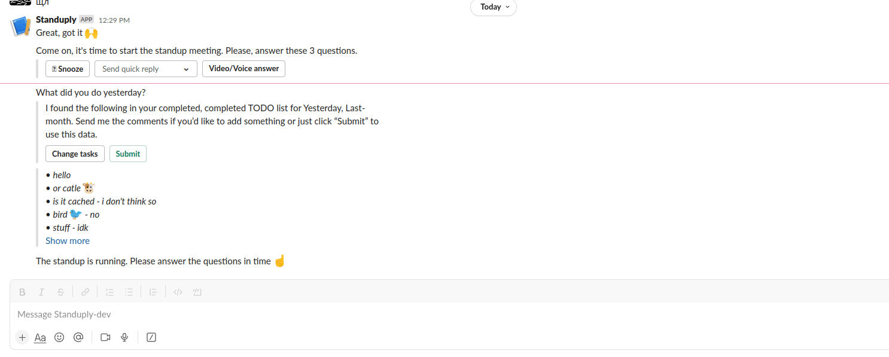
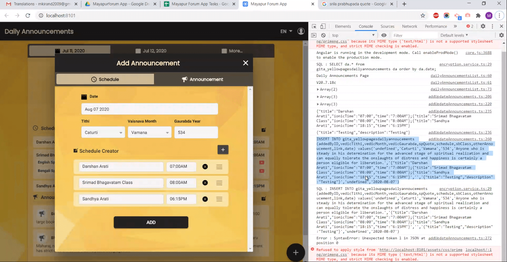
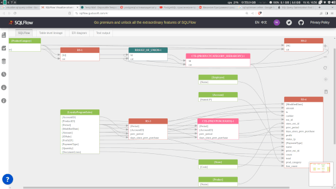
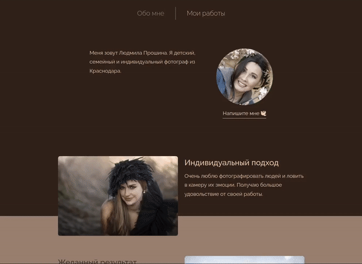
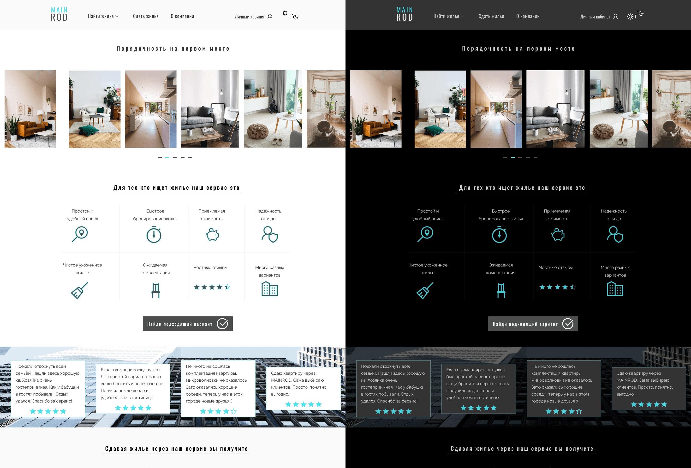
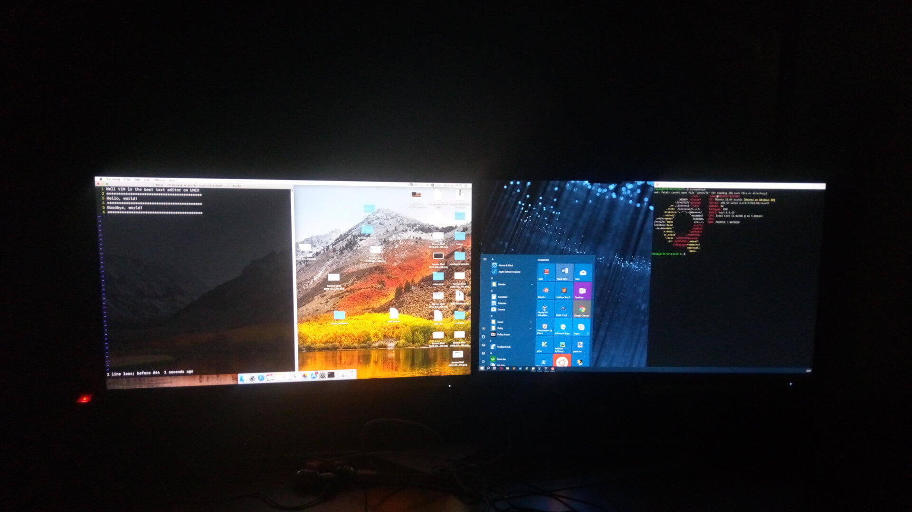
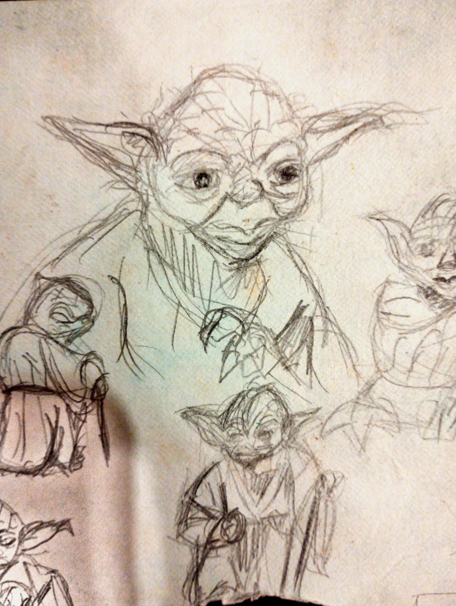

Epigraph
'Hallo!' said Pippin. 'Who are you, and what do you want?' 'I am called Strider,' he answered: 'and though he may have forgotten it, your friend promised to have a quiet talk with me. 'You said I might hear something to my advantage, I believe,' said Frodo. 'What have you to say?' 'Several things,' answered Strider.
— The Lord of the Rings, John Ronald Reuel Tolkien (the rest of the quotes are from the same source)
veyfera@localhost:~> whoami
Passionate about Linux, open-source, system engineering, low level stuff, backend development, Python, currently learning the C language. Inspired by new and old programs that are lean, lightweight, unbloated, time tested and don't frustrate end users.
veyfera@localhost:~> uptime
Experience
'What do you know?' 'Too much; too many dark things,' said Strider grimly. 'But as for your business —'
Have a solid work experience as a fullstack web developer and software engineer. Presently more inclined towards software development and building backends, but can also work on frontend. Worked in agile/remote teams with colleagues from all over the world, fluent in written and spoken English. Use all possible opportunities to try different technologies and work on projects in different fields to acquire new skills.
Tech that I use (in no specific order):
-
Python, NodeJs, Php, Shell
-
JavaScript, TypeScript, Angular, React, ReactNative, jQuery, Qt
-
MySql, PostgreSql, MongoDb, RabbitMq, GraphQl, SqlAlchemy
-
Linux, Git, Docker, Docker-compose, Vim, RegEx, SOLID, MVC, DRY, KISS
-
Figma, AdobeXd, Dbeaver, PyCharm
projects that are being rearranged and cleaned up for display on github
Education
The last grade/class exams were really tough, had to study university level material and lectures, became familiar with algorithms, data structures, OOP, theory of highload systems, OSI model and other advanced CS theory. At the same time I got an invitation for internship and covid started, making it extremely hard to apply to a university, ended up accepting the invitation. Now here I am with 4 year of commercial experience and a ton of side projects instead :)
- 
- 
- 
- 
- 
- 
- 
- 
Previous works
-
After three months of learning the company's tech stack, I started to work on real projects with the team. I developed frontend and backend of hybrid apps, all projects were for internal usage of organisations and communities. Technologies used: Angular, TypeScript, Ionic Framework, Python, Php, MySql
-
(Project based work, so the duration is short) Worked as fullstack developer, was responsible for creating new features and modules, tuning existing functionality, finding and fixing bugs in the main project. Agile remote/distributed team of developers, constant work with other people's code, discussions, pull requests, code review. Worked with microservice architecture, slack bots, integration with internal and external API's. Main technologies used: TypeScript, NodeJs, Python, Angular, React, MongoDb, RabbitMq
Hobbies
3D modelling, sketching, photography, sports, travelling, baking, old/retro tech, reading, history
- 

- 

People that I like to watch/read
Expectations
'What have you to say?' 'Several things,' answered Strider. 'But, of course, I have my price.' 'What do you mean?' asked Frodo sharply. 'Don't be alarmed! I mean just this: I will tell you what I know, and give you some good advice - but I shall want a reward.' 'And what will that be, pray?' said Frodo. He suspected now that he had fallen in with a rascal, and he thought uncomfortably that he had brought only a little money with him. All of it would hardly satisfy a rogue, and he could not spare any of it. 'No more than you can afford,' answered Strider with a slow smile, as if he guessed Frodo's thoughts. 'Just this: you must take me along with you, until I wish to leave you.'
I can get to work right away. All I need is little time and guidance to adapt to the new work flow and environment.